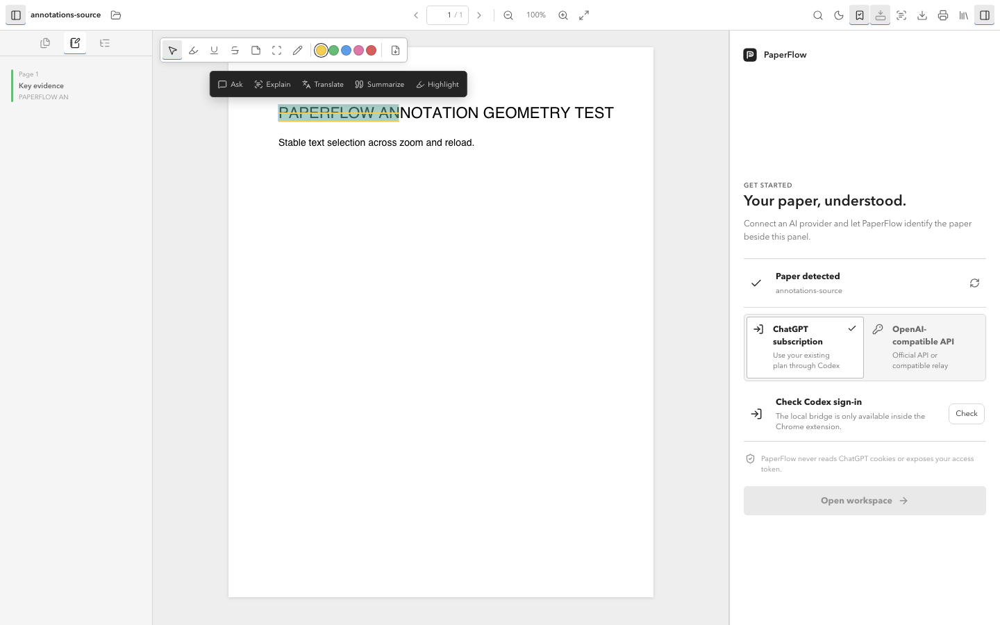
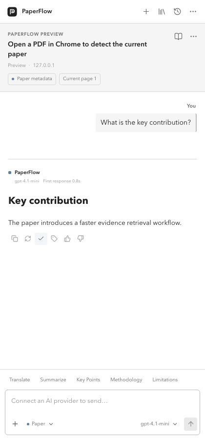

Collect without clutter
Nested collections, tags, favorites, duplicates, and fast search for libraries with thousands of papers.
read deeply.
A local-first PDF reader, research library, annotation workspace, and AI companion that stays with every paper.
Chrome 114+ · local-first · Apache-2.0

from paper to insight,
Select a passage and ask, explain, translate, summarize, or annotate it in place. Citations return you to the exact page.
one calm place for

Nested collections, tags, favorites, duplicates, and fast search for libraries with thousands of papers.
Conversations, notes, annotations, reading position, and paper memory remain attached to the source.
Independent interface and answer languages, local OCR for English and Chinese, and customizable AI providers.
the conversation stays
PaperFlow is not a disposable chat window. Each paper becomes a durable workspace you can reopen days later.

your data follows you,
PaperFlow has no document backend. Your library lives in local IndexedDB and OPFS, with optional encrypted objects in your own Google Drive.